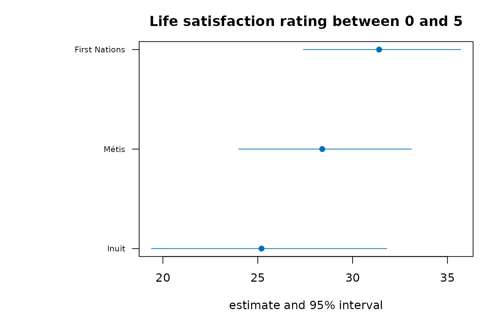
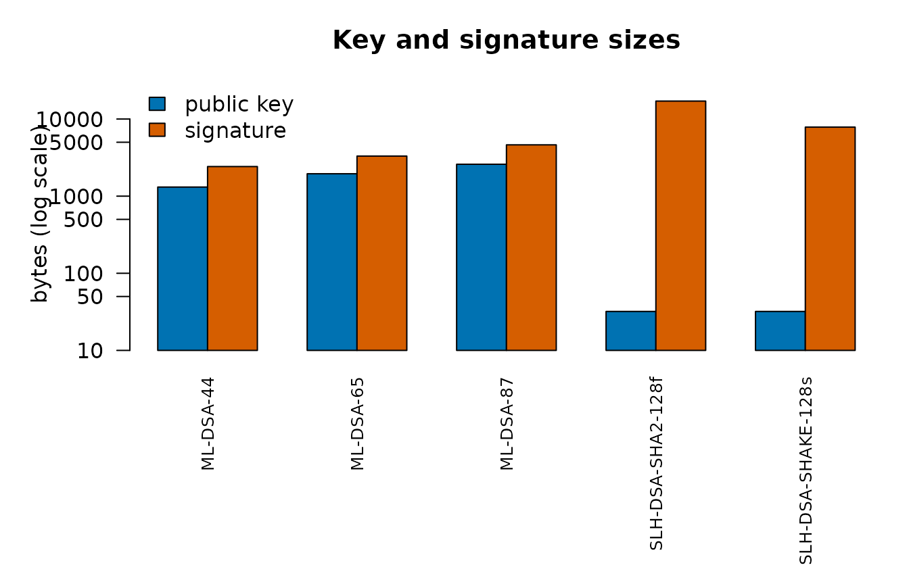
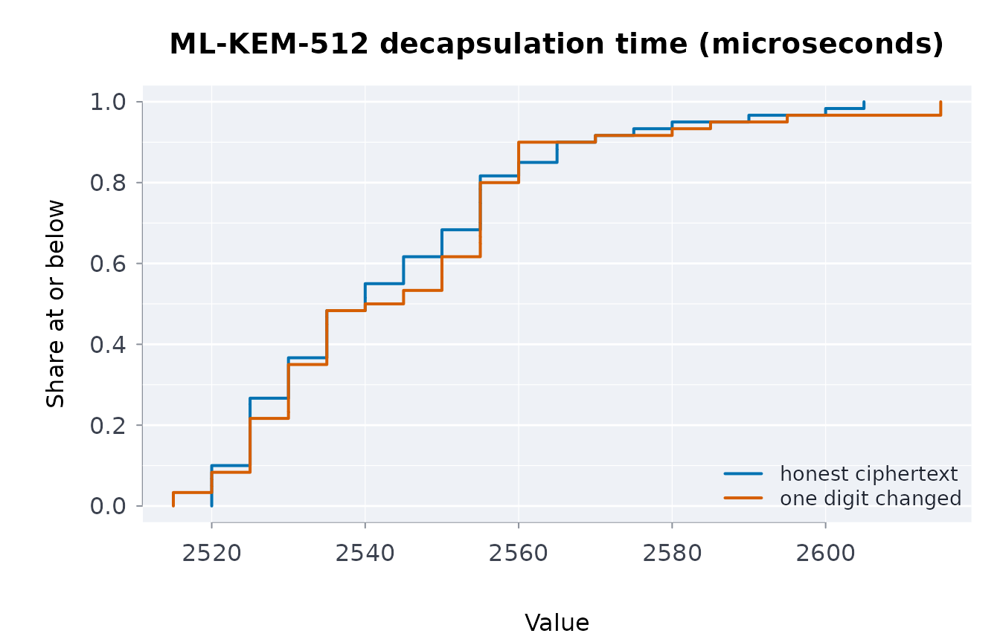

Integrity, signatures and cryptography
Source:vignettes/integrity-and-cryptography.Rmd
integrity-and-cryptography.RmdHashing, keyed digests, key derivation and Merkle trees
Everything a capsule pins is pinned by a digest. This vignette covers the hashing primitives, how to compare digests safely, how to derive a key from a passphrase, how to get randomness, and how a Merkle tree lets a large file be pinned and partially verified.
Digests of text and files
csha256("hello capsule")
#> [1] "97cdf3978fc8755453e42fb3d0384a6612f1dde79c46cf422abc0563cf8426e2"
csha512("hello capsule")
#> [1] "aa92b1aa2bf977ec1c4b3a47795d24e98ab595464236b9c59696c1999794714639df0fa5e66fb7be86bf2d05e4a45b6207a40fc4ae1f3458ca40ceed87a9d76e"
cblake2b("hello capsule")
#> [1] "061431a711a23d1745664ba6d36ad517ab6f48db421d492f13cd110f2067b9ce"
ccrc32("hello capsule")
#> [1] 1607001718Files are hashed in blocks, so a multi-gigabyte file does not need to fit in memory:
f <- tempfile()
writeLines("hello capsule", f)
sha256file(f)
#> [1] "55d6110230c260319d580bb6274db530b7e751c4f687fc00d0736ec531260a02"
sha512file(f)
#> [1] "358665f1505b7dced4ab0e1d7cf5b634bc60f8cbdf7c59f8ec6957f8e1a0df990fbaf92e6dc662662cca542e475b0862453a932d9fa58c2bc7a4b3de8cecdfc4"
crc32file(f)
#> [1] 2347637372
before <- sha256file(f)
writeLines("hello capsule (edited)", f)
sha256file(f) == before
#> [1] FALSECRC-32 is a checksum, not a cryptographic hash: it detects accidental
corruption and nothing more. SHA-256 and SHA-512 (FIPS 180-4) and
BLAKE2b are collision-resistant; vrfsha256() checks a file
against a pinned digest.
Digests of R objects
dgstobj() serialises an object canonically and hashes
the bytes, so attributes, names and types are part of the identity:
dgstobj(list(a = 1L, b = "x"))
#> [1] "bf5d21a8b26f6cec8503a46f69e854bf98fea03b62dfaf90cb780feac7165b27"
identical(dgstobj(1:10), dgstobj(1:10))
#> [1] TRUE
dgstobj(1:10) == dgstobj(1:11)
#> [1] FALSE
dgstobj(matrix(1:6, nrow = 2)) == dgstobj(1:6) # dimensions count
#> [1] FALSE
dgstobj(data.frame(x = 1:3))
#> [1] "24b0995a368ea8d1178b7f6e44c6d8956db4aadfc91d3e6f6911868b38c06d21"Keyed digests and constant-time comparison
An HMAC (RFC 2104) is a digest that only the holder of the key can produce, so a manifest cannot be re-signed without the key:
chmac("Jefe", "what do ya want for nothing?") # RFC 4231 test case 2
#> [1] "5bdcc146bf60754e6a042426089575c75a003f089d2739839dec58b964ec3843"
chmac("key-a", "manifest")
#> [1] "463b8b2c47caadd6334c53e4d9492fdac6fcaca185f56229043e1a025138ceae"
chmac("key-b", "manifest")
#> [1] "f3ebaf1b8fad504c57fd4cf82b163e30eac6eabd31b7c41a2a6e268ec445b134"Never compare a tag with ==. A string
comparison stops at the first differing character, so its running time
tells an attacker how many leading characters were right.
cdgsteq() compares every byte regardless and returns
FALSE for a length mismatch without erroring:
Deriving a key from a passphrase
A passphrase is not a key: it is short, low-entropy and chosen by a person. PBKDF2 (RFC 8018) stretches it with a salt and an iteration count that makes each guess expensive:
drvkey("password", "salt", iter = 1) # the published test vector
#> [1] "120fb6cffcf8b32c43e7225256c4f837a86548c92ccc35480805987cb70be17b"
identical(drvkey("pw", "s", 1000), drvkey("pw", "s", 1000))
#> [1] TRUE
drvkey("pw", "salt-a", 1000) == drvkey("pw", "salt-b", 1000)
#> [1] FALSEThe salt must be random and stored beside the ciphertext or signature; the default of 100,000 iterations is the floor for interactive use. A derived key signs a manifest symmetrically:
Randomness
rndbytes() draws from the operating system
(getrandom or /dev/urandom on Unix,
RtlGenRandom on Windows) and does not
consume R’s seeded stream, so a reproducible analysis is unaffected by
key generation happening beside it:
set.seed(1)
a <- stats::runif(1)
set.seed(1)
invisible(rndbytes(32))
identical(stats::runif(1), a)
#> [1] TRUEFor tests that need reproducible “random” bytes, the package’s AES-256 CTR_DRBG (SP 800-90A) gives the same bytes from the same seed, exactly as NIST’s known-answer files use it; a personalization string separates streams:
Merkle trees: pin a large file, verify a piece
A Merkle tree hashes a file in chunks, then hashes pairs of digests
up to one root. The root pins the whole file; a proof of
log2(n) digests shows that one chunk belongs without
holding the others, and a diff of the leaves names exactly which chunk
changed.
chunks <- c("row1,row2", "row3,row4", "row5,row6", "row7,row8")
root <- mrkroot(chunks)
root
#> [1] "3b1537c90e21c2e66f341b946388abbb78bf249fb433f961fba223b67141be31"
before <- mrklvs(chunks)
after <- mrklvs(c(chunks[1:2], "row5,row6-EDITED", chunks[4]))
which(before != after)
#> [1] 3
pr <- mrkprf(chunks, 3)
mrkvrf(chunks[3], pr, root)
#> [1] TRUE
mrkvrf("row5,row6-EDITED", pr, root)
#> [1] FALSEchnkfile() splits a real file into fixed-size chunks
that concatenate back to its bytes:
p <- tempfile()
writeLines(rep("some capsule content", 50), p)
ch <- chnkfile(p, chnkbytes = 128)
length(ch)
#> [1] 9
mrkroot(ch)
#> [1] "3f565b39becbebbc336618294525d7a1ff45394d68ecaec899d292bb0fd357c1"
identical(unlist(ch), readBin(p, "raw", file.size(p)))
#> [1] TRUEcpsbndl() pins each data file by one whole-file digest
(sha256file()); the Merkle tree is for pinning the parts of
a large file, so a mismatch identifies which part of it changed rather
than only that something did.
How these implementations are checked
The digests are compared with OpenSSL at every block boundary, run against the NIST ACVP sets for SHA-3, SHAKE, HMAC and PBKDF2, and fuzzed differentially against OpenSSL 3.5. The keyed-digest comparison and PBKDF2 run under valgrind with the key marked undefined to prove their timing does not depend on it, and dudect measures the comparison and PBKDF2 on real CPUs.
Pinning a community’s copy of a table
Ownership and control of data, in the sense of the First Nations principles of OCAP, include knowing that a copy has not been altered. A digest of the table and a Merkle root over its rows let a community check its copy, and check single rows without the rest:
The pinned table in a picture
The digests above pin this table. Its estimates and intervals for the first measure are drawn here: a reader who verifies the digest is looking at exactly these numbers.
ci_plot <- function(t, lab, main) {
o <- order(t$estimate)
t <- t[o, ]
y <- seq_len(nrow(t))
op <- par(mar = c(4, 10, 3, 1))
on.exit(par(op))
plot(t$estimate, y, xlim = range(t$lower, t$upper, na.rm = TRUE), yaxt = "n", pch = 19,
col = blpal()[1], xlab = "estimate and 95% interval", ylab = "", main = main)
segments(t$lower, y, t$upper, y, col = blpal()[1])
axis(2, y, lab[o], las = 1, cex.axis = 0.7)
}
t1 <- d[d$measure == d$measure[1], ]
ci_plot(t1, paste(t1$group, t1$age), t1$measure[1])
Attestations, signed bundles and tamper-evident chains
The Building reproducible data capsules vignette shows how a capsule pins data and describes it in a manifest. This one covers the three ways of putting a signature on that work so a reader can check it: an attestation of a manifest, a bundle of a whole capsule directory, and a chain that makes a sequence of manifests tamper-evident.
Attesting a manifest
An attestation binds a signature to a manifest and to what the manifest covers, with an optional note from the person signing:
m <- mkmnf(list(dataset = "otis", rows = 1200L), env = FALSE)
key <- fipskg("ML-DSA-65")
att <- cpsatst(m, key, note = "counts as published")
res <- cpschkatst(att, m)
res$ok
#> [1] TRUE
res$checks
#> check ok
#> 1 attestation_complete TRUE
#> 2 manifest_digest TRUE
#> 3 signature TRUE
#> detail
#> 1
#> 2 efa1b7387f225380245de0b5170999e87ad4044f3e8fd2ef6a6bfbc2bd0a9c90
#> 3A verifier needs the attestation and the manifest, nothing else. Any change to the manifest breaks it, and so does presenting a different key:
m2 <- m
m2$meta$rows <- 1201L
cpschkatst(att, m2)$ok
#> [1] FALSE
cpschkatst(att, m, keyexp = fipskg("ML-DSA-65")$public)$ok
#> [1] FALSEkeyexp is how a reader pins the signer: the attestation
carries the public key that made it, but a reader who knows which key to
expect should say so, or any key would do.
Bundling a capsule
A bundle is one signed artifact covering a directory: every file is hashed (hidden files included), the hashes and the manifest are signed, and the bundle verifies against the directory later:
dir <- tempfile()
dir.create(dir)
write.csv(data.frame(x = 1:3), file.path(dir, "data.csv"), row.names = FALSE)
m <- mkmnf(list(dataset = "demo"), env = FALSE)
key <- fipskg("ML-DSA-44")
b <- cpsbndl(dir, m, key, note = "as published")
cpsbndlvrf(attr(b, "path"), dir, man = m)$ok
#> [1] TRUETouch a byte of the data and the bundle no longer holds; the result names the file:
write.csv(data.frame(x = 1:4), file.path(dir, "data.csv"), row.names = FALSE)
v <- cpsbndlvrf(attr(b, "path"), dir, man = m)
v$ok
#> [1] FALSEA chain of manifests
A per-manifest signature proves each manifest is intact but says nothing about the sequence: a run could be deleted from the middle of a series, or two swapped, and every remaining signature would still verify. A hash chain links each entry to the one before it, so deletion, insertion and reordering all break it:
ch <- chnnew()
ch <- chnapp(ch, "manifest for run 1", label = "run-1")
ch <- chnapp(ch, "manifest for run 2", label = "run-2")
ch <- chnapp(ch, "manifest for run 3", label = "run-3")
chnvrf(ch)$valid
#> [1] TRUEEditing an entry breaks the chain and names where:
edited <- ch
edited$entries[[2]]$digest <- csha256("something else")
chnvrf(edited)$valid
#> [1] FALSE
chnvrf(edited)$broken_at
#> [1] 2Deleting one breaks it too, which a per-manifest digest would never catch:
dropped <- ch
dropped$entries[[2]] <- NULL
chnvrf(dropped)$valid
#> [1] FALSESealing the chain
The seal covers the links and the length together, so one signature over the seal fixes the whole history. Truncating the chain still seals, but to a different value:
key <- fipskg("ML-DSA-44")
sig <- cpssign(chnseal(ch), key)
cpsvrf(chnseal(ch), sig, fipspubkey(key))
#> [1] TRUE
truncated <- ch
truncated$entries[[3]] <- NULL
cpsvrf(chnseal(truncated), sig, fipspubkey(key))
#> [1] FALSEA chain whose links disagree has no seal to present at all:
chnseal(dropped)
#> [1] NAWhich to use
- One manifest, one signer:
cpsatst(). - A directory of files that must travel together:
cpsbndl(). - A series of runs, releases or data refreshes where order and
completeness matter:
chnapp()after each, signchnseal()at each release.
All three accept any signing key the package knows: ML-DSA and
SLH-DSA (fipskg()) or XMSS (pqckg(), with the
key state carried forward). A shared secret from drvkey()
is for keyed digests (chmac()), not for attestations: an
attestation names a public key, and a shared secret has none.
Releases of Indigenous health tables
A chain fits data a community needs to be able to trust release after release. Here each link pins one of the Statistics Canada tables on Indigenous health bundled with the package, so a later reader can tell whether any release was altered or dropped:
The table in a picture
The chain and the bundle above record this table, one indicator per release. Its estimates and intervals, drawn here for the first indicator, are what a reader sees after verification.
ci_plot <- function(t, lab, main) {
o <- order(t$estimate)
t <- t[o, ]
y <- seq_len(nrow(t))
op <- par(mar = c(4, 10, 3, 1))
on.exit(par(op))
plot(t$estimate, y, xlim = range(t$lower, t$upper, na.rm = TRUE), yaxt = "n", pch = 19,
col = blpal()[1], xlab = "estimate and 95% interval", ylab = "", main = main)
segments(t$lower, y, t$upper, y, col = blpal()[1])
axis(2, y, lab[o], las = 1, cex.axis = 0.7)
}
t1 <- d[d$indicator == d$indicator[1], ]
ci_plot(t1, t1$group, t1$indicator[1])
Key encapsulation: ML-KEM and HQC
A key-encapsulation mechanism (KEM) lets two parties agree on a shared secret over a public channel: the sender encapsulates a fresh secret under the recipient’s public key, producing a ciphertext; the recipient decapsulates the ciphertext with the secret key and recovers the same secret. The package implements ML-KEM (FIPS 203, lattice-based) and HQC (code-based), natively.
ML-KEM
key <- kemkg(768)
pub <- kempubkey(key)
# the sender holds only the public key
sent <- kemencap(pub)
# the recipient recovers the same secret from the ciphertext
got <- kemdecap(key, sent$ciphertext)
identical(sent$shared, got)
#> [1] TRUEThree parameter sets trade size for security margin:
kemsz(512)
#> public secret ciphertext seed shared
#> 800 1632 768 64 32
kemsz(768)
#> public secret ciphertext seed shared
#> 1184 2400 1088 64 32
kemsz(1024)
#> public secret ciphertext seed shared
#> 1568 3168 1568 64 32Implicit rejection
ML-KEM is designed so that a corrupted ciphertext does not produce an error. It produces a different, pseudorandom secret derived from the secret key and the ciphertext. This is the Fujisaki–Okamoto transform’s implicit rejection: an attacker who tampers with ciphertexts learns nothing from the recipient’s behaviour, because the recipient behaves identically either way.
Masked decapsulation (the default)
Decapsulation is the operation that uses the secret key, so it is the one a power or electromagnetic side channel would target. Since 0.5.10 it runs first-order masked by default: every value that depends on the secret key is held as two random shares that are refreshed from the operating system’s randomness on every call, and the re-encryption comparison of the FO transform is done on shares (the decompressed comparison of Bhasin et al., TCHES 2021). The result is byte-identical to the plain computation:
identical(kemdecap(key, sent$ciphertext, masked = FALSE), got)
#> [1] TRUE
identical(kemdecap(key, bad, masked = FALSE), other)
#> [1] TRUEmasked = FALSE is three to four times faster for
decapsulation (seven to eleven for ML-DSA signing) and is the right
choice where no physical attacker is in the threat model (a server in a
locked room). The Side-channel assurance vignette explains what
the masking defends against and how it was verified.
Key validation
FIPS 203 §7.3 requires a decapsulation key to be checked before use: its stored hash of the encapsulation key must match the key it contains. A key that fails this check is refused rather than used. This check was added after the Wycheproof vectors showed the earlier code accepted such a key.
HQC
HQC rests on the hardness of decoding random quasi-cyclic codes, an assumption unrelated to lattices, which is why NIST selected it as the second KEM. The interface is the same:
hkey <- hqckg(1)
hpub <- hqcpubkey(hkey)
hsent <- hqcencap(hpub)
identical(hqcdecap(hkey, hsent$ciphertext), hsent$shared)
#> [1] TRUE
hqcsz(1)
#> public secret ciphertext seed message salt shared
#> 2241 2321 4433 32 16 16 32Two revisions are implemented: the 2025 specification
(version = "v5", the default) and the round-4 submission
(version = "round4"), which differ in their shared-secret
derivation. A key made under one does not interoperate with the other,
and the version is recorded in the key:
old <- hqckg(1, ver = "round4")
cap <- hqcencap(hqcpubkey(old))
identical(hqcdecap(old, cap$ciphertext), cap$shared)
#> [1] TRUEUsing the shared secret
The shared secret is 32 bytes of hex. It is a key, not a
password: use it directly as the key of chmac() or to
derive further keys, never as text to be stored.
How these implementations are checked
ML-KEM runs against the NIST ACVP and C2SP Wycheproof sets (key
generation, encapsulation, decapsulation and key validation), is
compared byte for byte with OpenSSL 3.5, and is differentially fuzzed
against it. Decapsulation’s timing is measured on real x86-64 and arm64
CPUs with dudect, its constant-time property is proved under valgrind,
and its masked arithmetic is assessed for first-order power leakage in a
Cortex-M4 simulation. See SECURITY.md in the
repository.
Sending a table to a community data steward
Key encapsulation lets a sender share a table so only the holder of a secret key can read it, for instance a First Nations data steward receiving a release:
The sizes in a picture
What each parameter set puts on the wire: the public key the steward
publishes and the ciphertext each sender transmits, in bytes, for ML-KEM
(kemsz()) and HQC (hqcsz()).
sz <- rbind(
"ML-KEM-512" = kemsz(512L)[c("public", "ciphertext")],
"ML-KEM-768" = kemsz(768L)[c("public", "ciphertext")],
"ML-KEM-1024" = kemsz(1024L)[c("public", "ciphertext")],
"HQC-1" = hqcsz(1L)[c("public", "ciphertext")],
"HQC-3" = hqcsz(3L)[c("public", "ciphertext")],
"HQC-5" = hqcsz(5L)[c("public", "ciphertext")]
)
op <- par(mar = c(7, 5, 3, 1))
barplot(t(sz), beside = TRUE, col = blpal()[1:2], ylab = "bytes", las = 2, cex.names = 0.8,
legend.text = c("public key", "ciphertext"), args.legend = list(x = "topleft", bty = "n"),
main = "Key and ciphertext sizes")
par(op)Post-quantum signatures: ML-DSA, SLH-DSA and XMSS
A capsule is only as trustworthy as the signature on its manifest.
rmoriebricklayer implements the three NIST post-quantum
signature standards natively, with no system cryptography library:
ML-DSA (FIPS 204, lattice-based),
SLH-DSA (FIPS 205, hash-based, stateless) and
XMSS (RFC 8391, hash-based, stateful). All three are
used through the same two calls, cpssign() and
cpsvrf().
Why post-quantum, and why three schemes
A signature made today may need to verify in twenty years, when a large quantum computer could break RSA and ECDSA with Shor’s algorithm. The three schemes rest on different assumptions, so a break of one does not take the others:
- ML-DSA (Module-Lattice Digital Signature Algorithm, formerly Dilithium) rests on the hardness of Module-LWE and Module-SIS. Small keys and signatures, fast. The default.
- SLH-DSA (Stateless Hash-based, formerly SPHINCS+) rests only on the security of a hash function. Conservative; its signatures are large.
- XMSS is also hash-based but stateful: every key signs a fixed number of times and an index must never be reused. The package carries the state forward for you.
ML-DSA: the default
key <- fipskg("ML-DSA-65")
key$scheme
#> [1] "ML-DSA-65"
sig <- cpssign("a manifest digest", key)
cpsvrf("a manifest digest", sig, fipspubkey(key))
#> [1] TRUEThe verifier needs only the public key. Any change to the message is caught:
cpsvrf("a manifest digest (edited)", sig, fipspubkey(key))
#> [1] FALSEContext strings bind a signature to its purpose
FIPS 204 lets a signature carry a context: a short string hashed in with the message. The same message signed for one purpose does not verify under another, which stops a signature made for “staging” being replayed as a “release” approval:
Hedged and deterministic signing
By default ML-DSA signing is hedged: fresh randomness enters
every signature, so two signatures of one message differ (FIPS 204
recommends this; it also protects against fault attacks on the nonce).
deterministic = TRUE gives the variant where the signature
depends only on the key and the message:
Signing a digest computed elsewhere
ML-DSA signs mu = H(tr || M'), a digest of the message
that depends on the public key but not on the secret.
fipsmu() computes it from the public key, so the
machine holding the secret never needs to see the message:
mu <- fipsmu(fipspubkey(key), "a manifest digest", ctx = "release")
sig3 <- fipssignmu(key, mu)
fipsvrfmu(key, mu, sig3)
#> [1] TRUE
# the same signature verifies the ordinary way
cpsvrf("a manifest digest", sig3, key, ctx = "release")
#> [1] TRUESince 0.5.10, ML-DSA signing runs first-order masked by default (see the Side-channel assurance vignette): every secret-dependent value is held as two random shares. The signatures are byte-identical to the unmasked computation; only the cost differs.
SLH-DSA: hash-based, stateless
fipssz("ML-DSA-65")
#> public_key secret_key signature seed rnd
#> 1952 4032 3309 32 32
fipssz("SLH-DSA-SHAKE-128f")
#> public_key secret_key signature seed rnd
#> 32 64 17088 48 16The price of dropping the lattice assumption is size: an SLH-DSA signature is far larger than an ML-DSA signature at the same security level.
The calls are identical:
hkey <- fipskg("SLH-DSA-SHAKE-128f")
hsig <- cpssign("a manifest digest", hkey)
cpsvrf("a manifest digest", hsig, fipspubkey(hkey))
#> [1] TRUEXMSS: hash-based, stateful
An XMSS key of height h signs 2^h messages. The package
stores the next index in the key and
xmssadv(key, signature) gives the advanced key after every
signature; reusing an index would break security, so always advance the
key with xmssadv() and save that:
xkey <- pqckg(height = 3)
xkey$capacity
#> [1] 8
xkey$next_index
#> [1] 0
s1 <- cpssign("manifest-1", xkey)
cpsvrf("manifest-1", s1, signpubkey(xkey))
#> [1] TRUE
xkey <- xmssadv(xkey, s1)
xkey$next_index
#> [1] 1
s2 <- cpssign("manifest-2", xkey)
cpsvrf("manifest-2", s2, signpubkey(xkey))
#> [1] TRUE
# a signature does not transfer to another message
cpsvrf("manifest-1", s2, signpubkey(xkey))
#> [1] FALSEThe key is a value, so an old copy of it still says an old
next_index. The package therefore also keeps a record of
the highest index each key has used on this machine
(?xmssadv says where), and refuses a used index even from a
stale copy. A key generated here is entered at birth; a key from another
machine, one rebuilt from its seeds, or one used in a CI job or a
container with a fresh home directory is unknown to the record and must
be vouched for once with xmssregkey(key) before it signs
from index 0.
The key file is the state
RFC 10033 (Hash-Based Signatures: State and Backup
Management) separates the private key, which never changes, from
the state, the indices already used, which must be updated and saved
before a signature is released, and warns that a copied or restored
state signs used indices again. rmbl sign follows it: with
--scheme xmss-sha256 --key-file key.json the key file is
the state. It is rewritten atomically, with next_index
advanced and a used field, before any bundle is written,
and the run signs from the indices it reserved.
root <- tempfile("capsules-")
for (nm in c("one", "two")) {
d <- file.path(root, nm)
dir.create(d, recursive = TRUE)
utils::write.csv(data.frame(x = 1:3), file.path(d, "data.csv"), row.names = FALSE)
writeLines('{"resource": {"filename": "data.csv"}}', file.path(d, "data_provenance.json"))
}
kf <- tempfile(fileext = ".json")
writeLines(tojs(unclass(pqckg(height = 4)), auto_unbox = TRUE), kf)
copy <- tempfile(fileext = ".json")
invisible(file.copy(kf, copy)) # an old copy of the key, kept by mistake
status <- blcli(c("sign", root, "--scheme", "xmss-sha256", "--key-file", kf, "--json"),
out = function(s) NULL)
status
#> [1] 0
state <- fromjs(paste(readLines(kf), collapse = "\n"))
state$next_index # two capsules signed, two indices used
#> [1] 2
state$used$generation
#> [1] 1
# the old copy is refused: the bundles show indices it does not know are used
blcli(c("sign", root, "--scheme", "xmss-sha256", "--key-file", copy, "--overwrite"),
out = function(s) cat(s[grepl("stale", s)]))
#> rmoriebricklayer: stale copy of the key: index 1 of it was already signed (seen in /tmp/RtmpFi2tmA/capsules-356a4822a030/two/capsule_bundle.json), but this state says the highest used in its range is -1. Signing would reuse an index: use the copy that made that signature, or generate a new key
xmssidxseen(root)[, c("index", "reused")]
#> index reused
#> 1 0 FALSE
#> 2 1 FALSE--state-file keeps the state in a file of its own.
--sectors K --sector-index I splits the indices into K
disjoint ranges so that K signers can share one key, each in its own
range (RFC 10033, section 5.3), and --reserve N marks N
indices used in one write and signs from them (section 5.9; the ones a
run does not use are lost). A key kept as a CI secret is a fixed copy
that every job starts from, so every job would sign the same indices: in
CI, sign with ML-DSA unless the XMSS state lives in a file that persists
between jobs. NIST SP 800-208 approves XMSS only inside a hardware
module that never exports the key, which a key file is not.
Every way of being wrong returns FALSE
Verification returns FALSE for every signature of the
right shape that does not verify: a truncated or edited signature, a
foreign key and an edited message all fail the same way. (An object that
is not a signature at all, a key of the wrong class or a missing message
is an error, because that is a programming mistake rather than a
tampered artefact.)
pub <- fipspubkey(key)
bad <- sig
bad$signature <- paste0("ff", substring(bad$signature, 3))
cpsvrf("a manifest digest", bad, pub)
#> [1] FALSE
trunc <- sig
trunc$signature <- substring(sig$signature, 1, 64)
cpsvrf("a manifest digest", trunc, pub)
#> [1] FALSE
cpsvrf("a manifest digest", sig, fipspubkey(fipskg("ML-DSA-65")))
#> [1] FALSEHow these implementations are checked
ML-DSA and SLH-DSA are compared byte for byte with OpenSSL 3.5 and
run against the NIST ACVP and C2SP Wycheproof vector sets on every
change (6,848 checks, 0 failures at 0.5.10), and fuzzed differentially
against OpenSSL; XMSS, which OpenSSL does not implement, is checked
against the RFC 8391 vectors. Every signer runs under valgrind with the
secret key marked undefined, a dynamic check that no executed branch or
memory address depends on it. SECURITY.md in the package
repository has the full table of what each check catches and what it
does not.
Signing a release of Indigenous tables
A signature lets anyone check that a release came from its publisher and has not changed:
The sizes in a picture
What a signature costs on the wire, from fipssz(): the
public key a verifier keeps and the signature attached to each release,
in bytes, for ML-DSA and two SLH-DSA sets. The scale is logarithmic,
because an SLH-DSA signature is several times larger.
sch <- c("ML-DSA-44", "ML-DSA-65", "ML-DSA-87", "SLH-DSA-SHA2-128f", "SLH-DSA-SHAKE-128s")
sz <- t(vapply(sch, function(s) fipssz(s)[c("public_key", "signature")], numeric(2)))
op <- par(mar = c(9, 5, 3, 1))
barplot(t(sz), beside = TRUE, log = "y", ylim = c(10, 2 * max(sz)), col = blpal()[1:2],
ylab = "bytes (log scale)", las = 2, cex.names = 0.8, legend.text = c("public key", "signature"),
args.legend = list(x = "topleft", bty = "n"), main = "Key and signature sizes")
#> Warning in yinch(0.1): y log scale: yinch() is nonsense
par(op)Side-channel assurance: constant time, timing tests, masking and simulated power analysis
Correct cryptography can still leak its key through how it
computes: how long an operation takes, how much power the chip draws
while it runs, what it radiates. This vignette explains what the package
does about each channel, how that was verified, and exactly what remains
outside the verification. The harnesses live under inst/ in
the installed package and run in continuous integration on every
change.
list.files(system.file(package = "rmoriebricklayer"), pattern = "^(ctcheck|dudect|tvla|fuzz)$")
#> [1] "ctcheck" "dudect" "fuzz" "tvla"1. Timing
The threat
An operation’s duration depends on a secret when a branch condition depends on it, when a memory address depends on it (cache timing), or when an instruction’s latency depends on its operand (division on many cores). An attacker who can time the operation, locally or across a network, recovers the secret bit by bit.
Dynamic check: ctgrind (inst/ctcheck)
The secret key is marked undefined to valgrind memcheck (Langley’s ctgrind, 2010). Memcheck then reports every conditional jump and every memory address that depends on undefined data, which is exactly the set a timing attacker can observe. A clean run shows that, for the inputs the harness exercised, no branch or address of that binary depended on the secret; it is evidence about that binary and those inputs, not a proof over every input of that length. The only branches allowed are the ones the standards publish by design (a rejected sample in ML-DSA, the challenge, the hints), each passed through an explicit declassification point. The harness is built from the package’s own sources with GCC and Clang, and it also scans the dead stack after each operation for surviving copies of the secret.
Measured on hardware: dudect (inst/dudect)
Reparaz, Balasch and Verbauwhede’s Dude, is my code constant time? (DATE 2017): each measurement times the operation on an input drawn at random from a fixed class or a random class; Welch’s t compares the two timing distributions. |t| > 10 is a real difference; |t| < 4.5 is none. A positive control, an early-exit comparison, must be flagged or the run is invalid. CI runs it on x86-64 Linux, arm64 Linux and Apple silicon.
What this found
ML-KEM compression divided by q; at -O0 the
compiler emitted a hardware divide whose latency depends on the operand
(the KyberSlash class of bug). It is a multiply-and-shift now. Three
“add q when negative” corrections had compiled to conditional
execution on a secret share’s sign; they are branch-free masks now.
2. Power and electromagnetic emanation
The threat
A CMOS circuit draws power when its transistors switch. Under the Hamming-weight model a power sample is proportional to the number of 1-bits in a value being written; under the Hamming-distance model it is proportional to the number of bits that flip in a register or bus between its old and new value. Either lets an attacker correlate recorded traces against hypotheses on a secret-dependent intermediate (differential and correlation power analysis). Constant-time code is fully exposed to this: the values are secret even when the timing is not. EM attacks read the same switching through a near-field probe.
The countermeasure: first-order masking
Every secret-dependent intermediate x is split into two
shares that are each uniformly random on their own,
x = x0 XOR x1 (Boolean) or x = x0 + x1 mod q
(arithmetic). Linear operations act share by share; non-linear ones
consume fresh randomness so that no single intermediate depends on the
secret. In the probing model of Ishai, Sahai and Wagner (2003) this is
first-order security: any one observed value is independent of
the secret. The cost an attacker then pays grows exponentially in the
masking order with the measurement noise as the base.
ML-KEM decapsulation and ML-DSA signing are masked by default. The output is byte-identical to the unmasked computation, which the full vector suite checks on every vector:
key <- kemkg(512)
sent <- kemencap(kempubkey(key))
identical(kemdecap(key, sent$ciphertext, masked = TRUE),
kemdecap(key, sent$ciphertext, masked = FALSE))
#> [1] TRUE
skey <- fipskg("ML-DSA-44")
sig <- cpssign("manifest", skey, determ = TRUE)
cpsvrf("manifest", sig, fipspubkey(skey))
#> [1] TRUEThe gadgets (src/rmbl_masked.h) are the published ones:
Trichina’s two-share AND; a bitsliced ripple-carry adder over Boolean
shares (Goubin 2001; Bronchain and Cassiers 2022); arithmetic-to-Boolean
conversion by the decoding of Bos et al. (TCHES 2021) and the
decompressed ciphertext comparison of Bhasin et al. (TCHES 2021);
Boolean-to-arithmetic conversion by masked modular subtraction; masked
centred-binomial sampling; and the masked Keccak of Bertoni et
al. (2010). For ML-DSA, HighBits(w) is public (it is hashed
into the challenge) and is revealed one bit at a time; the three
rejection tests reveal one bit each.
Why the share-pair operations are assembly
A C compiler may place share 0 and then share 1 of one value in the
same register. Under the Hamming-distance model that register’s flips
are HW(x0 XOR x1) = HW(x): the secret, in the clear. The
simulator below showed exactly this for the C gadgets (|t| up to 135)
while the Hamming-weight model reported them clean. So every operation
that touches both shares is inline assembly (Thumb-2, x86-64, aarch64)
with a fixed register order, every temporary and destination zeroed
before use, a zero stored between the share-0 and share-1 stores, and
the registers scrubbed between passes that handle one share at a time.
On any other CPU the same operations run as plain C, with the same
results and without the register discipline.
Simulated power analysis: TVLA (inst/tvla)
The target is the Cortex-M4, the reference core of the embedded post-quantum literature. The package’s own headers are compiled for it and executed instruction by instruction in the unicorn emulator; capstone decodes which registers each instruction writes, and one sample per instruction is recorded under both leakage models. The statistic is TVLA (Goodwill et al. 2011; ISO/IEC 17825): a fixed secret against random secrets, Welch’s t at every sample, in two independent experiments; a point leaks when |t| > 4.5 in both with the same sign. Each masked kernel runs beside its unmasked control (the same code with share 1 zero), because a control that does not leak means the harness sees nothing.
bash inst/tvla/build.sh # arm-none-eabi-g++, unicorn, capstone
cd inst/tvla && ./build/tvla all 5000 # Hamming-weight model
TVLA_MODEL=hd ./build/tvla all 5000 # Hamming-distance modelAt 2 x 3,000 traces every masked kernel is clean under both models
(max |t| 3.0) and every unmasked control leaks (|t| 87 to 163). CI fails
on a masked leak under either model. The full table is in
inst/tvla/README.md.
readLines(system.file("tvla", "README.md", package = "rmoriebricklayer"), n = 12)
#> [1] "# Simulated power analysis (TVLA)"
#> [2] ""
#> [3] "`inst/ctcheck` shows no branch or memory address depends on a secret, and `inst/dudect`"
#> [4] "measures that timing does not. Neither says anything about **power**: a CPU's power draw"
#> [5] "depends on the values it handles even when its timing does not, and that is what power and"
#> [6] "electromagnetic attacks read."
#> [7] ""
#> [8] "This directory assesses the package's ML-KEM code for first-order power leakage before"
#> [9] "silicon. `kernels.cpp` compiles the package's own `src/rmbl_mlkem_arith.h` and"
#> [10] "`src/rmbl_masked.h` for a Cortex-M4 (the reference target of the post-quantum embedded"
#> [11] "literature); `tvla.cpp` runs them instruction by instruction in unicorn and records one"
#> [12] "sample per instruction. Capstone decodes which registers each instruction writes, and the"3. What is outside these checks
Honesty about scope is part of the assurance. The checks do not model:
- Electromagnetic emanation on a specific board. The simulation models switching activity, which is the source of EM leakage too, but a measurement needs a probe.
- Fault injection: glitching the clock or voltage to skip an instruction. The checks assume the program runs as written.
- Glitches and coupling a leakage model omits: pipeline forwarding, write-back buffers and capacitive coupling between wires, which can combine shares (the MIRACLE study, TCHES 2021, catalogues them).
- Higher-order attacks: two shares resist one probe; a second-order attacker combines two leakage points.
Each has a software route (richer fitted leakage models such as ELMO,
a fault campaign in the same emulator, higher-order gadgets, formal
verification of the gadgets with maskVerif) and, for EM and for
confirming a given chip, a hardware route. The repository’s
SECURITY.md states the current boundary. The package itself
ships no firmware; the side-channel review bundle distributed alongside
the release (a separate archive) carries firmware for a ChipWhisperer
Cortex-M4 target (CW-Lite Arm, CW308 STM32F3) running the same kernels,
and a fixed-versus-random capture script. No capture has been run, and
every power figure above comes from the emulator.
4. Choosing the plain path
Masking costs about 2.3 to 3.4 times the plain time on decapsulation
(4 ms for ML-KEM-768 against 1.2 ms on this package’s test machine) and
7 to 10 times on signing (17 ms for ML-DSA-65 against 2.4 ms), depending
on the CPU. Where the threat model has no physical attacker,
kemdecap(masked = FALSE),
cpssign(masked = FALSE) and
fipssignmu(masked = FALSE) keep the plain path, and
options(rmoriebricklayer.masked = FALSE) makes that the
default for a session (a chain or bundle signs many times). Timing
protections cannot be switched off; they are not optional.
Indigenous examples
Side-channel assurance concerns the cryptography, not the data; the
keys it tests are the ones that sign and encrypt releases such as the
Indigenous tables shown in
vignette("integrity-and-cryptography") and
vignette("integrity-and-cryptography"). The masked
implementation is used by default:
getOption("rmoriebricklayer.masked", TRUE)
#> [1] TRUEConstant time in a picture
A side-channel test asks whether the time an operation takes depends on secret data. This chart is a picture of the question, not the test (that is the dudect and TVLA harnesses above). It times ML-KEM decapsulation of the honest ciphertext and of the same ciphertext with one hex digit changed, alternating the two so that drift in the machine’s clock speed falls on both alike. Implicit rejection sends the changed ciphertext down the same path as the honest one, so the two curves should lie close together; the timing harnesses are what decide whether they are indistinguishable.
bad <- sent$ciphertext
substr(bad, 1, 1) <- if (substr(bad, 1, 1) == "0") "1" else "0" # one hex digit changed
tm <- function(ct) {
s <- proc.time()[["elapsed"]]
for (i in 1:200) kemdecap(key, ct)
(proc.time()[["elapsed"]] - s) / 200 * 1e6
}
honest <- tampered <- numeric(60)
for (k in 1:60) {
honest[k] <- tm(sent$ciphertext)
tampered[k] <- tm(bad)
}
plotecdf(c(honest, tampered), rep(c("honest ciphertext", "one digit changed"), each = 60),
main = "ML-KEM-512 decapsulation time (microseconds)")